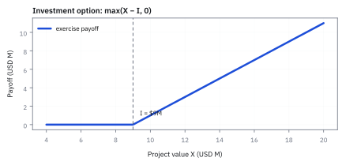
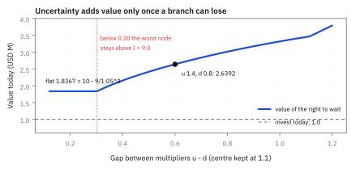
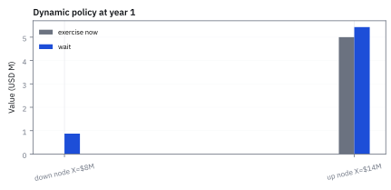

23.1 Real Options and Dynamic Programming
สิทธิ์ที่จะรอ ขยาย หรือเลิกโครงการจริงมีราคา และหาราคานั้นได้ด้วยการคิดย้อนจากปลายทางทีละ node
บริษัทพลังงานแห่งหนึ่งได้ใบอนุญาตสร้างโรงไฟฟ้ามาหนึ่งใบ ใบอนุญาตนี้ให้สร้างวันนี้ก็ได้ หรือเลื่อนไปสร้างปีหน้า หรือปีถัดไปก็ได้ ฝ่ายวางแผนต้องเสนอผู้บริหารว่าจะสร้างเมื่อไร
ของที่รู้ (ตัวเลขสมมติทั้งหมด):
- มูลค่าโรงไฟฟ้าวันนี้ $X_0=\$10$ ล้าน คือเงินสดทั้งหมดที่โรงไฟฟ้าจะทำได้ตลอดอายุ แปลงเป็นเงินวันนี้แล้ว
- ค่าก่อสร้าง $I=\$9$ ล้าน จ่ายครั้งเดียวตอนเริ่มสร้าง
- มูลค่าโรงไฟฟ้าเปลี่ยนทุกปี ปีละครั้ง จะคูณ 1.4 (ไฟขายดี) หรือคูณ 0.8 (ไฟขายไม่ดี)
- ดอกเบี้ยเงินฝากที่ไม่มีความเสี่ยงคือ 5% ต่อปี ใช้แปลงเงินในอนาคตเป็นเงินวันนี้
ฝ่ายวางแผนคิดแบบที่ตำราการเงินสอนกันทั่วไป คือคิด NPV (net present value: มูลค่าที่ได้ ลบเงินที่ต้องจ่าย ถ้าลงมือวันนี้) ได้ $\text{NPV}=X_0-I=10-9=+\$1$ ล้าน
NPV เป็นบวก ฝ่ายวางแผนจึงเสนอว่า “สร้างวันนี้เลย” ควรเซ็นอนุมัติไหม?
ลองตอบก่อนเปิดเฉลย
ไม่ควร หน้านี้จะคำนวณให้ดูทีละขั้นว่าใบอนุญาตที่ยังไม่ใช้มีค่า \$2.6392 ล้าน แต่การสร้างวันนี้ได้แค่ \$1 ล้าน การเซ็นวันนี้จึงทิ้งมูลค่าไป $2.6392-1=\$1.6392$ ล้าน
ค่าของการรอมาจากสองแหล่ง แหล่งแรก ได้จ่ายค่าก่อสร้างช้าลงสองปี ซึ่งมีค่า \$1.8367 ล้าน แหล่งที่สอง ได้สิทธิ์ไม่สร้างเลยถ้ามูลค่าตกเหลือ \$6.4 ล้าน ซึ่งมีค่า \$0.8025 ล้าน สองแหล่งรวมกันได้ $1.8367+0.8025=2.6392$ NPV บวกบอกว่าโครงการดี แต่ไม่ได้บอกว่าวันนี้คือวันที่ดีที่สุดที่จะสร้าง
ภาพรวมก่อนลงสูตร
NPV ตอบได้คำถามเดียว คือ ถ้าต้องเลือกเดี๋ยวนี้ว่าจะทำหรือไม่ทำ แบบไม่มีโอกาสเปลี่ยนใจ ทำแล้วคุ้มไหม แต่ผู้บริหารตัวจริงแทบไม่เคยเจอคำถามแบบนั้น เขาเลื่อนโครงการได้ ขยายทีหลังได้ หยุดกลางทางได้ หรือเปลี่ยนวิธีเดินเครื่องได้
ทุกข้อข้างบนเป็นสิทธิ์ ไม่ใช่หน้าที่ คือจะใช้ก็ได้ ไม่ใช้ก็ได้ ในตลาดการเงิน สัญญาที่ให้สิทธิ์แบบนี้เรียกว่า option เช่นสิทธิ์ซื้อหุ้นในราคาที่ตกลงไว้ล่วงหน้า แต่สิทธิ์ในหน้านี้ผูกกับของจริง เช่นโรงไฟฟ้า เหมือง หรือโรงงาน จึงเรียกว่า real option
ทำไมสิทธิ์พวกนี้สำคัญ เพราะโครงการจริงมีเรื่องที่ไม่แน่นอนหลายชั้น เช่นราคาขายและความต้องการของตลาด เทคโนโลยีใหม่ของคู่แข่ง ผลวิจัยที่อาจล้มเหลว คนในองค์กร หรือกฎหมายที่เปลี่ยน ความยืดหยุ่นช่วยให้รอดูก่อนแล้วค่อยตัดสินใจ คำถามของหน้านี้คือ ความยืดหยุ่นนั้นมีค่าเป็นเงินเท่าไร
วิธีหาคำตอบคือวาดมูลค่าโครงการเป็นต้นไม้ราคาสองกิ่ง (ทุกปีมูลค่าแตกเป็นสองทาง คือขึ้นหรือลง จุดแตกแต่ละจุดเรียกว่า node) แล้วเริ่มคิดจากปีสุดท้ายย้อนกลับมาหาวันนี้ ที่ทุก node เราเทียบสองทาง “ใช้สิทธิ์เดี๋ยวนี้” กับ “รออีกหนึ่งปี” แล้วเลือกทางที่ได้มากกว่า วิธีคิดย้อนแบบนี้เรียกว่า dynamic programming
ลำดับของหน้านี้:
- เกมลูกเต๋า เพื่อดูว่าทำไมต้องคิดจากปลายทาง
- ตีราคาใบอนุญาตโรงไฟฟ้าในโจทย์เปิดหน้า
- แยกค่าของใบอนุญาตเป็นสองก้อน คือค่าของเวลากับค่าของประกัน
- สิทธิ์ขายทิ้งกับสิทธิ์ขยาย
- เหมืองทอง Simplico ที่เลือกหยุดขุดได้ทุกปี และมีสิทธิ์อัปเกรดเครื่องจักรที่ต้องเลือกจังหวะ
รูปด้านล่างสรุปคำตอบทั้งหมดของโรงไฟฟ้าไว้ในภาพเดียว ตัวเลขในรูปจะคำนวณให้ดูทีละขั้นในขั้นที่ 2 ถึง 5
รูป — ต้นไม้ตัดสินใจของใบอนุญาตโรงไฟฟ้า คิดย้อนจากปลายทาง
ศัพท์ที่ใช้ในหัวข้อนี้
- Option
- สัญญาที่ให้สิทธิ์ซื้อหรือขายของบางอย่างในราคาที่ตกลงไว้ล่วงหน้า แต่ไม่บังคับ ถ้าใช้แล้วไม่คุ้มก็ปล่อยทิ้ง
- Call, put และ strike
- call คือสิทธิ์ซื้อ put คือสิทธิ์ขาย strike คือราคาที่ตกลงไว้ว่าจะซื้อหรือขาย ในหน้านี้ค่าก่อสร้างเล่นบท strike ของสิทธิ์สร้าง และราคาขายทิ้งเล่นบท strike ของสิทธิ์ขายทิ้ง
- Real option
- สิทธิ์ (ไม่ใช่หน้าที่) ที่จะลงทุน เลื่อน ขยาย ลดขนาด หยุด หรือเปลี่ยนวิธีใช้ของจริง เช่นโรงไฟฟ้าหรือเหมือง ใช้ตีราคาความยืดหยุ่นที่ NPV มองไม่เห็น
- NPV (net present value)
- มูลค่าวันนี้ของเงินสดที่โครงการจะทำได้ ลบเงินลงทุน ตอบว่าถ้าต้องตัดสินใจเดี๋ยวนี้ คุ้มไหม แต่ไม่ได้ถามว่ารอแล้วดีกว่าไหม
- คิดลด (discount)
- แปลงเงินในอนาคตเป็นเงินวันนี้ โดยหารด้วยตัวที่เงินฝากโตได้ในช่วงนั้น เช่นดอกเบี้ย 5% ต่อปี เงิน \$1.05 ปีหน้ามีค่าเท่ากับ $1.05/1.05=\$1$ วันนี้
- Backward induction
- แก้ปัญหาหลายช่วงเวลาโดยเริ่มจากช่วงสุดท้ายซึ่งไม่เหลือทางเลือก แล้วถอยกลับมาทีละช่วง ต้องทำแบบนี้เพราะการตัดสินใจวันนี้ต้องรู้ก่อนว่าอนาคตมีค่าเท่าไร
- Dynamic programming
- วิธีแตกปัญหาใหญ่เป็นปัญหาย่อยทีละ node แล้วใช้คำตอบของ node ลูกซ้ำ แทนการไล่ทุกเส้นทาง ต้นไม้สิบปีมี 66 node แต่มี 1,024 เส้นทาง (ขั้นที่ 4 แสดงที่มา)
- Continuation value
- ค่าของการยังไม่ใช้สิทธิ์ แล้วรอไปอีกหนึ่งช่วง ทุก node เอาค่านี้ไปเทียบกับเงินที่ได้ถ้าใช้สิทธิ์ทันที
- Pricing weight (risk-neutral weight)
- น้ำหนักที่ใช้ถ่วงกิ่งขึ้นกับกิ่งลง เลือกมาให้ต้นไม้ให้ราคาวันนี้ของตัวโครงการเองถูกต้อง มันเป็นเครื่องมือตั้งราคา ไม่ใช่โอกาสจริงที่มูลค่าจะขึ้น
- Hedge และขายชอร์ต
- hedge คือการถือของสองอย่างที่ขึ้นลงสวนกัน จนกำไรขาดทุนหักล้างกัน ขายชอร์ตคือยืมของมาขายก่อน แล้วซื้อคืนทีหลัง ได้กำไรเมื่อราคาลง
- Exercise และ exercise boundary
- exercise คือการใช้สิทธิ์ เช่นจ่ายค่าก่อสร้างหรือค่าอัปเกรด หลังใช้แล้วสิทธิ์ก็หมดไป exercise boundary คือเส้นแบ่งบนต้นไม้ระหว่าง node ที่ควรใช้สิทธิ์ทันทีกับ node ที่ควรรอ
- American option
- option ที่ใช้สิทธิ์ได้ทุกเมื่อก่อนหมดอายุ ไม่ใช่แค่วันสุดท้าย คนถือจึงต้องเลือกจังหวะ
สัญลักษณ์และหน่วย
| สัญลักษณ์ | ความหมาย | หน่วย |
|---|---|---|
| $X_t$ | มูลค่าโรงไฟฟ้า ณ ปี $t$ ถ้าสร้างเสร็จแล้ว (ยังไม่หักค่าก่อสร้าง) | \$ ล้าน |
| $I$ | ค่าก่อสร้าง ซึ่งเล่นบท strike | \$ ล้าน |
| $u,\ d$ | ตัวคูณขาขึ้นและขาลงต่อหนึ่งก้าว | ไม่มีหน่วย |
| $R$ | เงิน 1 ดอลลาร์ที่ฝากแบบไม่มีความเสี่ยงโตเป็นเท่าไรในหนึ่งก้าว เช่นดอกเบี้ย 5% ได้ $R=1.05$ | ไม่มีหน่วย |
| $r$ | ดอกเบี้ยไม่มีความเสี่ยงต่อปีของเหมือง ($1+r$ เล่นบทเดียวกับ $R$) | ต่อปี |
| $t,\ T$ | ปีที่กำลังพิจารณา และปีสุดท้ายที่สิทธิ์ยังใช้ได้ | ปี |
| $q$ | น้ำหนักตั้งราคาของกิ่งขึ้น (กิ่งลงได้ $1-q$) | ไม่มีหน่วย |
| $P_t,\ H_t,\ V_t$ | เงินที่ได้ถ้าใช้สิทธิ์ตอนนี้ ค่าของการรอ และมูลค่าของสิทธิ์ ณ node นั้น | \$ ล้าน |
| $W_t,\ E_t$ | ค่าของสิทธิ์ขายทิ้ง (walk away) และสิทธิ์ขยาย (expand) ของโรงไฟฟ้า | \$ ล้าน |
| $s,\ S_0,\ C,\ G$ | ราคาทองที่ node ราคาทองวันนี้ ต้นทุนขุด และกำลังผลิตของเหมือง | \$ ต่อออนซ์ (สามตัวแรก), ออนซ์ต่อปี |
| $V^{\text{up}}_t,\ A_t,\ U_t$ | มูลค่าเหมืองที่อัปเกรดแล้ว ค่าของการขุดด้วยเครื่องเก่าแล้วรอ และมูลค่าเหมืองที่ยังถือสิทธิ์อัปเกรด | \$ |
| $\Delta V$ | เงินที่ได้เพิ่มถ้าอัปเกรดเดี๋ยวนี้แทนการรอ บวกแปลว่าควรอัปเกรดทันที | \$ |
ขั้นที่ 1 — เกมลูกเต๋า: ทำไมต้องคิดจากปลายทาง
ก่อนกลับไปที่โรงไฟฟ้า ลองเกมง่าย ๆ ที่ตรวจเองได้ทุกตัวเลขก่อน เกมนี้มีโครงเดียวกับโรงไฟฟ้า คือในแต่ละรอบ เราเลือกได้ว่าจะ “รับเดี๋ยวนี้” หรือ “รอดูรอบหน้า”
โจทย์ให้อะไรมาบ้าง:
- ลูกเต๋าหกหน้า แต่ละหน้าออกด้วยโอกาส 1/6
- ทอยได้ไม่เกินสามครั้ง
- หลังทอยแต่ละครั้ง เลือกได้สองทาง ทางแรก หยุดแล้วรับเงินเท่าแต้มที่ออก เช่นออก 4 ได้ \$4 ทางที่สอง ทิ้งแต้มนั้นแล้วทอยใหม่
คำถามคือ ถ้าเล่นอย่างฉลาดที่สุด เกมนี้ให้เงินเฉลี่ยเกมละเท่าไร ตัวเลขนี้คือค่าเข้าเล่นที่ยุติธรรม
ปัญหาโผล่ทันทีที่ครั้งแรก สมมติทอยได้ 4 ควรเก็บไหม? ตอบไม่ได้จนกว่าจะรู้ว่าการทอยต่อมีค่าเท่าไร แต่ค่าของการทอยต่อก็ขึ้นกับว่าครั้งหลัง ๆ จะเล่นอย่างไร เราจึงต้องเริ่มจากครั้งที่สาม ซึ่งไม่มีอะไรให้เลือกแล้ว แล้วค่อยถอยกลับมา
ให้ $V_k$ คือเงินเฉลี่ยที่จะได้ ถ้ากำลังจะทอยครั้งที่ $k$ และเล่นอย่างฉลาดจากนั้นไป
ครั้งที่สามไม่มีทางเลือก ออกอะไรก็ต้องรับ เงินเฉลี่ยจึงเป็นค่าเฉลี่ยของหกหน้า คือ 3.5 ตัวเลขนี้คือกุญแจของครั้งที่สอง เพราะตอนทอยครั้งที่สอง เรารู้แล้วว่าถ้าทิ้งแต้มแล้วทอยต่อ จะได้เฉลี่ย 3.5 จึงควรเก็บแต้มที่ดีกว่า 3.5 คือ 4, 5, 6 และทิ้งแต้ม 1, 2, 3
$V_2$ จึงมีสองก้อน ก้อนแรก $\tfrac{4+5+6}{6}$ คือแต้มที่เก็บ แต่ละแต้มออกด้วยโอกาส 1/6 ก้อนที่สอง $\tfrac36(3.5)$ คือสามหน้าที่ทิ้ง (โอกาส 3/6) ซึ่งพาเราไปทอยครั้งที่สามที่มีค่า 3.5 ครั้งแรกคิดแบบเดียวกัน แต่ถ้าทิ้งแต้ม จะได้ไปเล่นครั้งที่สองซึ่งมีค่า $V_2=4.25$ เกณฑ์จึงขยับขึ้นเป็น 4.25 เก็บแค่ 5 กับ 6 ได้ก้อน $\tfrac{5+6}{6}$ และทิ้งสี่หน้าที่เหลือ ได้ก้อน $\tfrac46(4.25)$
สังเกตว่าเกณฑ์จะสูงเมื่อยังเหลือโอกาสทอยมาก เพราะการรอยังมีค่ามาก นี่คือหน้าตาของทุกปัญหาในหน้านี้ ในแต่ละจุด เทียบเงินที่ได้ถ้าหยุดเดี๋ยวนี้กับค่าของการรอ แล้วเลือกตัวที่มากกว่า
คำตอบ: ค่าเข้าเล่นที่ยุติธรรมคือ $V_1=\$4.6667$ หรือ 14/3 กฎเล่นคือ ครั้งแรกเก็บเฉพาะ 5 หรือ 6 ครั้งที่สองเก็บ 4 ขึ้นไป ครั้งที่สามรับอะไรก็ได้ที่ออก
ตรวจเองใน 10 วินาที: คูณ $V_1$ ด้วย 6 เพื่อให้เป็นเลขเต็ม $6V_1=5+6+4(4.25)=11+17=28$ จึงได้ $V_1=28/6=14/3$ ถ้าให้ทอยได้หลายครั้งขึ้นเรื่อย ๆ ค่าของการทอยต่อจะสูงขึ้นทุกครั้ง จนในที่สุดเก็บแต่ 6 ค่าของเกมจึงเข้าใกล้ 6 แต่ไม่เกิน 6
รูป — แต้มไหนเก็บ แต้มไหนทอยใหม่ ในแต่ละครั้ง
ขั้นที่ 2 — สิทธิ์ที่จะสร้างคือ call option
กลับมาที่โรงไฟฟ้า ก่อนจะคิดว่าใบอนุญาตมีค่าเท่าไร ต้องรู้ก่อนว่าถ้าตัดสินใจสร้างในปี $t$ บริษัทได้เงินเท่าไร
ถ้าสร้าง บริษัทจ่ายค่าก่อสร้าง $I$ แล้วได้โรงไฟฟ้ามูลค่า $X_t$ จึงได้สุทธิ $X_t-I$ แต่ถ้า $X_t$ ต่ำกว่า $I$ บริษัทก็แค่ไม่สร้าง เพราะไม่มีใครบังคับ ได้ศูนย์ ไม่ใช่ติดลบ ให้ $P_t$ คือเงินที่ได้ถ้าใช้สิทธิ์สร้างในปี $t$ ตัวอย่างข้างล่างใช้กิ่งที่แย่ที่สุดของปีที่ 2 ซึ่งมูลค่าตกสองปีติด $X_2=10\times0.8\times0.8=6.4$
สูตรนี้บอกว่า เราได้ส่วนที่มูลค่าเกินค่าก่อสร้าง แต่ไม่เคยเสียเมื่อมูลค่าต่ำกว่า ถ้าถูกบังคับสร้าง กิ่งนี้จะขาดทุน \$2.6 ล้าน แต่สิทธิ์ที่จะไม่สร้างเปลี่ยนตัวเลขนี้เป็น 0
รูปนี้คือ payoff (เงินที่ได้ตอนใช้สิทธิ์) ของ call ที่เคยเห็นบนต้นไม้ราคาสองกิ่ง call คือสิทธิ์ซื้อของในราคา strike ที่ตกลงไว้ ที่นี่ $X_t$ เล่นบทราคาของ และ $I$ เล่นบท strike ต่างกันแค่ “ของ” ตัวนี้คือโครงการที่ยังไม่ได้สร้าง ไม่ใช่หุ้น มุมหักของกราฟที่ $X=I$ คือที่มาของมูลค่าทั้งหมด เพราะกิ่งที่แย่ถูกตัดไว้ที่ศูนย์ ส่วนกิ่งที่ดียังได้เต็ม
รูป — สิทธิ์ที่จะไม่สร้างเปลี่ยน −2.6 เป็น 0

แกนนอนคือมูลค่าโรงไฟฟ้าในปีที่ 2 จาก 4 ถึง 22 ล้านดอลลาร์ แกนตั้งคือเงินที่ได้ถ้าสร้าง เส้นประเทาคือกรณีถูกบังคับสร้าง ได้ $X-9$ เส้นทึบคือกรณีมีสิทธิ์เลือก ได้ $\max(X-9,\ 0)$ สองเส้นทับกันทางขวาของ 9 และแยกกันทางซ้าย จุดดำสามจุดคือ node ปีที่ 2 ของต้นไม้ด้านบน ได้ $19.6-9=10.6$, $11.2-9=2.2$ และ 0 จุดเทาที่ −2.6 คือเงินที่กิ่งล่างสุดจะเสียถ้าไม่มีสิทธิ์เลือก
ขั้นที่ 3 — ต้นไม้ของมูลค่าโครงการ และน้ำหนักตั้งราคา q
การจะรู้ว่าการรอมีค่าเท่าไร เราต้องมีภาพก่อนว่ามูลค่าโรงไฟฟ้า $X$ จะเปลี่ยนไปอย่างไรในอนาคต เราเลือกภาพที่ง่ายที่สุด คือต้นไม้สองกิ่ง ปีละหนึ่งก้าว ขึ้นคูณ $u=1.4$ ลงคูณ $d=0.8$ นี่คือสมมติฐานที่เราเลือกเอง ไม่ใช่ผลที่พิสูจน์ ดอกเบี้ย 5% ต่อปีเขียนเป็น $R=1+0.05=1.05$
ต่อมาต้องรู้ว่าจะถ่วงกิ่งขึ้นกับกิ่งลงด้วยน้ำหนักเท่าไร ให้กิ่งขึ้นได้น้ำหนัก $q$ กิ่งลงได้ $1-q$ เราเลือก $q$ ด้วยกติกาข้อเดียว คือต้นไม้ต้องให้ราคาวันนี้ของตัวโรงไฟฟ้าเองถูกต้องก่อน ถ้าแม้แต่ของที่รู้ราคาแล้วยังตั้งราคาผิด ก็ไม่ควรเชื่อราคาที่มันให้กับสิทธิ์ กติกานี้ข้อเดียวก็กำหนด $q$ ได้ทันที
มูลค่าปีที่ 2 ได้จาก $14\times1.4=19.6$, $14\times0.8=11.2$ และ $8\times0.8=6.4$ ขึ้นแล้วลงกับลงแล้วขึ้นไปจบที่เดียวกัน เพราะ $14\times0.8=8\times1.4=11.2$ ปีที่ 2 จึงมี 3 node ไม่ใช่ 4
หัวใจของขั้นนี้คือสมการที่หาร $R$ ความหมายของมันคือ ถ่วงมูลค่าปีหน้าของสองกิ่งด้วย $q$ แล้วคิดลดกลับมาหนึ่งปี ต้องได้มูลค่าวันนี้ $X_0$ พอดี $X_0$ อยู่ทุกพจน์ จึงหารทิ้งได้ เหลือตัวไม่รู้แค่ $q$ ตัวเดียว ตรวจกลับ $\big(\tfrac{5}{12}(14)+\tfrac{7}{12}(8)\big)/1.05=10.5/1.05=10$ ตรงกับ $X_0$
ตัวเลขต้องเป็นไปตาม $d\lt R\lt u$ คือ $0.8\lt1.05\lt1.4$ ซึ่งผ่าน ทำไมต้องเป็นแบบนี้ ถ้าแม้แต่กิ่งลงยังโตไม่แพ้เงินฝาก ($d\ge R$) ใครก็ยืมเงินที่ 5% มาถือโครงการ แล้วไม่มีทางขาดทุน แถมกิ่งขึ้นยังได้กำไร เงินฟรีแบบนี้อยู่ในตลาดได้ไม่นาน ถ้า $u\le R$ ก็กลับด้านกัน เงื่อนไขนี้ยังเป็นเงื่อนไขเดียวกับที่ทำให้ $q$ อยู่ระหว่าง 0 กับ 1 ด้วย
$q=5/12\approx0.4167$ ไม่ใช่โอกาสจริงที่มูลค่าจะขึ้น ต่อให้ทีมวิเคราะห์เชื่อว่าโอกาสขึ้นจริงคือ 60% (ตัวเลขสมมติ) คำตอบก็ไม่เปลี่ยน เพราะความเชื่อนั้นถูกนับไว้ในมูลค่า 10 วันนี้แล้ว
แต่การใช้ $q$ แบบนี้มีเงื่อนไขซ่อนอยู่ ในตลาดต้องมีของที่ซื้อได้และขายชอร์ตได้ (ยืมมาขายก่อนแล้วซื้อคืนทีหลัง) ซึ่งขึ้นลงตามมูลค่าโครงการ เพื่อใช้สร้างพอร์ต hedge คือพอร์ตที่กำไรขาดทุนหักล้างกันจนไม่มีความเสี่ยง ทองคำของเหมืองท้ายหน้านี้ซื้อขายได้ จึงเข้าเงื่อนไขเต็มที่ ส่วนโรงไฟฟ้า hedge ได้แค่บางส่วน ด้วยการขายไฟล่วงหน้า
ขั้นที่ 4 — สมการเดียวที่ใช้ทั้งหน้า
ตอนนี้มีของครบแล้ว คือกฎของเกมลูกเต๋า (เทียบหยุดกับรอ) และน้ำหนัก $q$ (ใช้ถ่วงสองกิ่ง) ขั้นนี้รวมสองอย่างเป็นสมการชุดเดียว ที่จะใช้ซ้ำไปจนจบหน้า ให้ $V_t(X)$ คือค่าของสิทธิ์ที่ node ปี $t$ ซึ่งมูลค่าโครงการเท่ากับ $X$ และ $H_t(X)$ คือค่าของการรอ ที่ปีสุดท้าย $T$ สิทธิ์หมดอายุ ไม่มีอะไรให้รอ ค่าของสิทธิ์จึงเท่ากับเงินที่ได้ถ้าใช้สิทธิ์ ก่อนหน้านั้นทุก node เทียบใช้สิทธิ์เดี๋ยวนี้กับรออีกหนึ่งก้าว
ค่าของการรอ $H_t$ คือ continuation value ได้จากค่าของ node ลูกสองตัว ถ่วงด้วย $q$ และ $1-q$ แล้วคิดลดกลับมาหนึ่งปีด้วยการหารด้วย $R$ ส่วน $V_t$ คือกฎของเกมลูกเต๋า ใช้สิทธิ์ถ้าได้มากกว่าการรอ สมการรูปนี้เรียกว่าสมการ Bellman จุดที่ทำให้มันได้ผลคือ $V_{t+1}$ ทางขวาถูกคิดไว้แล้วตอนเดินผ่านปี $t+1$ เราจึงเริ่มจากปีสุดท้ายแล้วถอยกลับมาทีละปี
ทำไมวิธีนี้ประหยัดแรง เพราะแต่ละ node คิดครั้งเดียวแล้วใช้ซ้ำ ไม่ต้องไล่ทุกเส้นทาง ปีที่ $t$ มี $t+1$ node ต้นไม้ $T$ ก้าวจึงมี node ทั้งหมด $1+2+\cdots+(T+1)=(T+1)(T+2)/2$ แต่ทุกก้าวแตกเป็นสองทาง จึงมีเส้นทาง $2^T$ เส้น สองปีมี $3\cdot4/2=6$ node กับ $2^2=4$ เส้นทาง สิบปีมี $11\cdot12/2=66$ node กับ $2^{10}=1{,}024$ เส้นทาง ยิ่งต้นไม้ลึก ส่วนต่างยิ่งมหาศาล
ขั้นที่ 5 — เดินถอยหลังสองปี: รอชนะในทุก node
ขั้นนี้ใช้สมการ Bellman กับโรงไฟฟ้าจริง เพื่อตอบโจทย์เปิดหน้า
โจทย์ให้อะไรมาบ้าง:
- มูลค่าโรงไฟฟ้าปีที่ 2 จากต้นไม้ในขั้นที่ 3 คือ 19.6, 11.2 และ 6.4 ล้าน
- ค่าก่อสร้าง $I=9.0$ ล้าน
- น้ำหนัก $q=5/12$ และ $1-q=7/12$ คิดลดปีละ $R=1.05$
ปีที่ 2 เป็นปีสุดท้าย จึงสร้างเฉพาะกิ่งที่คุ้ม จากนั้นถอยมาปีที่ 1 แล้วถอยมาวันนี้ ตัวยก $u$ กับ $d$ บอกว่าเป็น node บน (มูลค่าขึ้น) หรือ node ล่าง (มูลค่าลง) ของปีที่ 1
ทุก node ทำสองอย่างเหมือนกัน คือคิดค่าของการรอ $H$ จากลูกสองตัว แล้วเทียบกับเงินที่ได้ถ้าสร้างทันที จุดที่น่าสนใจคือ node บนของปีที่ 1 สร้างทันทีได้ $14.0-9.0=5.0$ ซึ่งเป็นกำไรจริง แต่การรอมีค่า 5.4286 มากกว่า จึงยังไม่ควรสร้าง ที่ node ล่าง สร้างทันทีได้ $\max(8.0-9.0,\ 0)=0$ ส่วนการรอยังมีค่า 0.8730 เพราะยังมีโอกาสขึ้นไปเป็น 11.2 ซึ่งคุ้มที่จะสร้าง
คำตอบ: ใบอนุญาตมีค่า $V_0=\$2.6392$ ล้าน ส่วนการสร้างวันนี้ได้ \$1.0 ล้าน ส่วนต่าง $2.6392-1.0=\$1.6392$ ล้าน คือค่าของความยืดหยุ่น การเซ็นสร้างวันนี้ก็คือการทิ้งสิทธิ์ที่มีค่า 2.6392 เพื่อแลกกับ 1.0 ทุก node ก่อนปีที่ 2 ควรรอ
ตรวจเองใน 10 วินาที: ที่ node บนของปีที่ 1 ลูกทั้งสอง (19.6 และ 11.2) เกิน 9 จึงสร้างแน่นอน การรอที่ node นี้จึงเหมือนสัญญาว่าจะได้โรงไฟฟ้าปีหน้า และจ่าย 9 ปีหน้า โรงไฟฟ้ามีค่า 14.0 วันนี้ (ต้นไม้ตั้งราคามันไว้ถูก) ส่วนค่าก่อสร้างที่จ่ายปีหน้ามีค่าวันนี้ $9.0/1.05=8.5714$ จึงได้
ส่วนต่าง 0.4286 คือดอกเบี้ยหนึ่งปีของค่าก่อสร้างที่ยังไม่ต้องจ่าย อีกข้อที่ตรวจได้คือ ค่าวันนี้ต้องไม่ต่ำกว่า NPV 1.0 เพราะสิทธิ์นี้รวมทางเลือก “สร้างวันนี้” ไว้ในตัวแล้ว
ขั้นที่ 6 — 2.6392 มาจากไหน: ค่าของเวลา บวกค่าของประกัน
ตัวเลข 2.6392 ตัวเดียวไม่บอกว่าความยืดหยุ่นมาจากไหน ผู้บริหารอยากรู้ว่าจ่ายเพื่ออะไร ขั้นนี้จึงแยกมันเป็นสองก้อนที่อธิบายได้
เริ่มจากข้อสังเกตในขั้นที่ 5 ว่าไม่มี node ไหนเลือกสร้างก่อนปีที่ 2 ค่าของใบอนุญาตจึงเท่ากับค่าของสิทธิ์ที่ใช้ได้แค่ปีที่ 2 คือ payoff ปีที่ 2 ถ่วงด้วยน้ำหนักแล้วคิดลดสองปี เขียน $\mathbb E_q[\cdot]$ แทนค่าเฉลี่ยที่ถ่วงด้วยน้ำหนัก $q$ ปีที่ 2 มีสามกิ่ง น้ำหนักคือ $q^2$ (ขึ้นสองครั้ง), $2q(1-q)$ (ขึ้นหนึ่งลงหนึ่ง มีสองลำดับ) และ $(1-q)^2$ (ลงสองครั้ง) เครื่องมือที่ใช้แยกคือเอกลักษณ์ของ max ในแถวแรก
เอกลักษณ์ในแถวแรกจริงทั้งสองกรณี ถ้า $X\ge I$ ก้อนหลังเป็นศูนย์ เหลือ $X-I$ ตรงกับทางซ้าย ถ้า $X\lt I$ สองก้อนรวมกันได้ $(X-I)+(I-X)=0$ ตรงกับทางซ้ายเช่นกัน เมื่อแทนเข้าไปในค่าเฉลี่ยถ่วงน้ำหนัก ค่าของใบอนุญาตจึงแยกเป็นสองก้อน
ก้อนแรกคิดง่ายเพราะ $q$ ถูกเลือกมาให้ตั้งราคาโครงการถูกทีละปี ใช้สองครั้งก็ยังถูก ค่าเฉลี่ยของ $X_2$ คิดลดสองปีจึงได้ $X_0=10$ กลับมา ตรวจเองได้ $\tfrac{25}{144}(19.6)+\tfrac{70}{144}(11.2)+\tfrac{49}{144}(6.4)=11.025=10\times1.05^2$ ก้อนที่สองมีกิ่งเดียวที่ $I-X_2$ เป็นบวก คือกิ่ง 6.4 ซึ่งต้องลงสองครั้ง จึงมีน้ำหนัก $(7/12)^2=0.3403$ และขาดอยู่ $9-6.4=2.6$
ก้อนแรก 1.8367 คือค่าของเวลา ได้จากการจ่ายค่าก่อสร้างช้าลงสองปีเท่านั้น ต่อให้สัญญาว่าจะสร้างแน่นอนในปีที่ 2 ก็ได้ค่านี้แล้ว ก้อนที่สอง 0.8025 คือค่าของประกัน คือสิทธิ์ที่จะไม่สร้างในกิ่งที่แย่ สิทธิ์นี้ก็คือ put (สิทธิ์ขาย) บนโครงการ ที่มีค่าก่อสร้างเป็น strike การแยกแบบนี้คือ put–call parity ฉบับโครงการจริง ซึ่งบอกว่า call = ของ − strike ที่คิดลดแล้ว + put
รูป — ค่าของใบอนุญาตแยกเป็นเวลากับประกัน
ขั้นที่ 7 — ความไม่แน่นอนเพิ่มค่าเฉพาะเมื่อมีกิ่งที่ขาดทุน
คนมักพูดว่า “ความผันผวนสูง option ยิ่งมีค่า” (ความผันผวนคือขนาดที่มูลค่าแกว่งขึ้นลง) ประโยคนี้จริงแค่ครึ่งเดียว ขั้นนี้ทดลองให้เห็นว่าจริงเมื่อไร
บนต้นไม้ของเรา ความผันผวนวัดได้จากช่องห่างระหว่างตัวคูณขึ้นกับตัวคูณลง เรียกว่า $g=u-d$ ชุดตัวเลขเดิมมี $g=1.4-0.8=0.6$ เพื่อให้เปลี่ยนแค่การแกว่ง ไม่เปลี่ยนทิศทาง เราตรึงค่ากลางของตัวคูณไว้ที่ $(u+d)/2=(1.4+0.8)/2=1.1$ เท่าเดิม แล้วถ่าง $g$ ออก คำถามคือ กิ่งล่างสุดของปีที่ 2 ตกต่ำกว่าค่าก่อสร้าง 9 เมื่อไร
กิ่งล่างสุดของปีที่ 2 คือมูลค่าที่ลงสองครั้ง $10d^2$ มันไม่ต่ำกว่า 9 ตราบที่ $d\ge d_{\min}$ และเพราะ $d=1.1-g/2$ เงื่อนไขเดียวกันนี้คือ $g\le g_{\max}$ ถ้ากิ่งที่แย่ที่สุดยังเกิน 9 ก็สร้างทุกกิ่ง สิทธิ์ที่จะไม่สร้างไม่เคยถูกใช้ ก้อนประกันในขั้นที่ 6 จึงเป็นศูนย์ เหลือแค่ค่าของเวลา 1.8367 ไม่ว่าช่องห่างจะเท่าไร
เมื่อ $g$ เกิน 0.30263 กิ่งล่างสุดเริ่มต่ำกว่า 9 สิทธิ์ที่จะไม่สร้างจึงเริ่มทำงาน ประกันเริ่มมีค่า และโตตามช่องห่าง ข้างล่างคือสองตัวอย่างที่คิดด้วยมือได้ (ชุด $g=0.6$ คือโจทย์หลักซึ่งได้ 2.6392) ทั้งสองชุดไม่มี node ไหนควรสร้างก่อนปีที่ 2 เพราะ node บนของปีที่ 1 มีลูกเกิน 9 ทั้งคู่ การรอจึงชนะด้วยเหตุผลเดียวกับการตรวจในขั้นที่ 5 (ได้ดอกเบี้ยของค่าก่อสร้าง) ส่วน node ล่างมีมูลค่า $10\times0.9=9$ และ $10\times0.6=6$ สร้างทันทีได้ 0 จึงใช้สูตรแบบขั้นที่ 6 ได้ คือถ่วง payoff ปีที่ 2 ด้วย $q^2$ และ $2q(1-q)$ แล้วหารด้วย $1.05^2=1.1025$
ตัวเลขในวงเล็บคือ payoff ปีที่ 2 ของกิ่งที่คุ้มสร้าง ได้แก่ $16.9-9=7.9$, $11.7-9=2.7$, $25.6-9=16.6$ และ $9.6-9=0.6$ กิ่งล่างสุด (8.1 และ 3.6) ต่ำกว่า 9 จึงได้ศูนย์และไม่ต้องเขียน ยิ่งช่องห่างกว้าง ค่าของสิทธิ์ยิ่งสูง: 1.8367, 2.1556, 2.6392, 3.3184 ส่วนช่องห่างต้องเกิน 0.1 ด้วย เพราะ $d=1.1-g/2$ ต้องต่ำกว่า $R=1.05$ ตามเงื่อนไขของขั้นที่ 3 กราฟข้างล่างจึงเริ่มที่ 0.12
รูป — ความไม่แน่นอนเพิ่มค่าเมื่อไร

แกนนอนคือช่องห่าง $g=u-d$ จาก 0.12 ถึง 1.2 คิดทีละ 0.01 รวม 109 จุด โดยตรึงค่ากลางของตัวคูณไว้ที่ 1.1 แกนตั้งคือค่าของใบอนุญาตวันนี้ (ล้านดอลลาร์) ทางซ้ายเส้นราบอยู่ที่ 1.8367 ซึ่งเป็นค่าของเวลาล้วน เส้นจุดแดงที่ 0.3026 คือจุดที่กิ่งล่างสุดเริ่มต่ำกว่า 9.0 หลังจุดนั้นเส้นเริ่มชันขึ้น เพราะประกันเริ่มมีค่า จุดดำคือชุดตัวเลขหลักของหน้านี้ ($u=1.4$, $d=0.8$) ที่ 2.6392 เส้นประเทาคือการสร้างวันนี้ ได้ 1.0
ขั้นที่ 8 — สิทธิ์ทิ้งคือ put สิทธิ์ขยายคือ call
สิทธิ์ที่จะรอเป็นแค่หนึ่งในหลายแบบ ขั้นนี้ดูอีกสองแบบที่พบบ่อย คือสิทธิ์ขายทิ้งเมื่อโครงการแย่ กับสิทธิ์ขยายเมื่อโครงการดี
สมมติว่าบริษัทสร้างโรงไฟฟ้าวันนี้ไปแล้ว ได้ NPV 1.0 ล้าน และในสัญญามีสิทธิ์เพิ่มสองข้อ ใช้ได้ในปีที่ 1 (ตัวเลขสมมติ)
- สิทธิ์ขายทิ้ง (abandon) มีผู้ซื้อรายหนึ่งตกลงไว้แล้วว่าจะรับซื้อโรงไฟฟ้าที่ \$9 ล้าน ถ้าบริษัทอยากขาย
- สิทธิ์ขยาย (expand) จ่ายเพิ่ม \$3 ล้าน เพื่อขยายกำลังผลิต ทำให้มูลค่าโรงไฟฟ้าเพิ่มขึ้น 30%
โจทย์ให้อะไรมาบ้าง: ปีที่ 1 มูลค่าโรงไฟฟ้าเป็น 14 หรือ 8 ล้าน น้ำหนัก 5/12 กับ 7/12 คิดลดด้วย 1.05 ให้ $W$ (walk away) คือค่าของสิทธิ์ขายทิ้ง และ $E$ (expand) คือค่าของสิทธิ์ขยาย ตัวห้อยบอกปี
สิทธิ์ขายทิ้งให้เงินเฉพาะกิ่งลง เพราะโรงไฟฟ้ามีค่าแค่ 8 แต่ขายได้ 9 ได้ส่วนต่าง 1 รูปของมันคือ put (สิทธิ์ขาย) บนโครงการ โดยมีราคาขายทิ้ง 9 เป็น strike สิทธิ์ขยายให้เงินเฉพาะกิ่งขึ้น เพราะส่วนที่เพิ่มคือ $0.3\times14=4.2$ จ่าย 3 ได้ 1.2 ส่วนกิ่งลง ส่วนที่เพิ่มคือ $0.3\times8=2.4$ ไม่คุ้มกับ 3 จึงไม่ขยาย รูปของมันคือ call (สิทธิ์ซื้อ) บนส่วนที่ขยาย
ค่าสุดท้ายบวกสามก้อนตรง ๆ ได้ คือ NPV ของโรงไฟฟ้า บวกค่าของสองสิทธิ์ เพราะสองสิทธิ์ถูกใช้คนละกิ่ง ถ้ามีกิ่งที่อยากใช้ทั้งคู่ จะบวกกันไม่ได้ เพราะขายทิ้งแล้วก็ไม่เหลืออะไรให้ขยาย
สิทธิ์แบบอื่นมีหน้าตาเดียวกัน เช่น ลดขนาด (put บนส่วนที่ตัดทิ้ง) สลับวิธีเดินเครื่อง (โรงไฟฟ้าที่เปิดปิดตามราคา ซึ่งเป็นเรื่องของหน้าถัดไป) ทำเป็นเฟส (ยาใหม่ที่ทดลองทีละเฟสและหยุดได้ทุกเฟส แต่ละเฟสจึงเป็น option บนเฟสถัดไป) และ option ต่อยอด (โครงการนำร่องที่ NPV ติดลบ แต่เปิดทางให้โครงการรุ่นถัดไปที่ทำกำไร)
คำตอบ: สิทธิ์ขายทิ้งมีค่า \$0.5556 ล้าน สิทธิ์ขยายมีค่า \$0.4762 ล้าน โรงไฟฟ้าที่สร้างวันนี้พร้อมสองสิทธิ์มีค่า \$2.0318 ล้าน ในตัวเลขชุดนี้ยังน้อยกว่าการถือใบอนุญาตแล้วรอ ซึ่งมีค่า \$2.6392 ล้าน
ตรวจเองใน 10 วินาที: put กับ call สองตัวนี้ได้เงินคนละกิ่ง จึงไม่ต้องเลือกว่าจะใช้ตัวไหน ลองเปลี่ยนราคาขายทิ้งเป็น 14 สิทธิ์ขายทิ้งจะให้ $14-8=6$ ในกิ่งลง และ $14-14=0$ ในกิ่งขึ้น ค่าวันนี้กลายเป็น $\tfrac{7}{12}(6)/1.05=3.5/1.05=3.3333$
รูป — สิทธิ์ทิ้งกับสิทธิ์ขยายจ่ายเงินคนละกิ่ง
ขั้นที่ 9 — เหมืองทอง Simplico: สิทธิ์หยุดขุดที่เกิดซ้ำทุกปี
โรงไฟฟ้ามีการตัดสินใจครั้งเดียว คือสร้างเมื่อไร ตัวอย่างต่อไปมีการตัดสินใจทุกปี มันมาจากตำรา Investment Science ของ David Luenberger และเป็นตัวอย่างคลาสสิกของเรื่องนี้
บริษัทหนึ่งกำลังจะเช่าเหมืองทองชื่อ Simplico เป็นเวลา 10 ปี ทุกปีผู้เช่าเลือกได้ว่าจะขุดหรือไม่ขุด คำถามคือ สัญญาเช่านี้มีค่าเท่าไร ของที่รู้:
- ราคาทองวันนี้ $S_0=\$400$ ต่อออนซ์
- ทุกปีราคาทองคูณ $u=1.2$ หรือคูณ $d=0.9$ โอกาสจริงที่จะขึ้นคือ 0.75 และลงคือ 0.25
- ต้นทุนขุด $C=\$200$ ต่อออนซ์
- ขุดได้ไม่เกิน $G=10{,}000$ ออนซ์ต่อปี
- ดอกเบี้ยไม่มีความเสี่ยง $r=10\%$ ต่อปี จึงคิดลดปีละ $1+r=1.1$
- ทองที่ขุดในปีหนึ่งขายตอนสิ้นปี ด้วยราคาตอนต้นปี (ตำราตั้งไว้ให้คิดง่าย)
- หยุดขุดปีไหนก็ได้ ไม่มีค่าใช้จ่าย และปีหน้ากลับมาขุดต่อได้
ให้ $V_t(s)$ คือมูลค่าของสัญญาเช่า ที่ปี $t$ เมื่อราคาทองคือ $s$ สมการข้างล่างคือสมการ Bellman ของขั้นที่ 4 ปรับให้เข้ากับเหมือง
$q$ ใช้สูตรเดิมของขั้นที่ 3 แค่เปลี่ยน $R$ เป็น $1+r=1.1$ และใช้ตัวคูณของทอง สังเกตว่าโอกาสจริง 0.75 ไม่ปรากฏที่ไหนเลย เพราะทองซื้อขายและขายชอร์ตได้ ความเชื่อของตลาดว่าทองจะขึ้นจึงถูกนับไว้ในราคา 400 วันนี้แล้ว $V_{10}=0$ เพราะพอครบ 10 ปี สัญญาเช่าหมด เหมืองกลับไปเป็นของเจ้าของ ผู้เช่าไม่ได้อะไรต่อ
มูลค่าแต่ละปีมีสองก้อน ก้อนแรกคือกำไรปีนี้ $G\max(s-C,\ 0)$ ถ้าราคาต่ำกว่าต้นทุน ก็หยุดขุด ได้ศูนย์ ไม่ใช่ติดลบ นี่คือ max แบบเดียวกับสิทธิ์ที่จะไม่สร้างโรงไฟฟ้า แต่เกิดซ้ำทุกปี เงินก้อนนี้ได้ตอนสิ้นปี จึงต้องหารด้วย $1+r$ ก้อนที่สองคือมูลค่าสัญญาปีหน้า ถ่วงด้วย $q$ แล้วคิดลดหนึ่งปี
ต่างจากโรงไฟฟ้าตรงที่ไม่มีการเทียบ “ใช้สิทธิ์” กับ “รอ” ด้วย max ตัวนอก เพราะการหยุดขุดปีนี้ไม่ทำให้เสียสิทธิ์ขุดปีหน้า การตัดสินใจแต่ละปีจึงแยกจากกัน
ขั้นที่ 10 — ตรวจสอง node ด้วยมือ แล้วอ่านค่าวันนี้
ต้นไม้ราคาทองสิบปีมี 55 node คิดด้วยมือทั้งหมดไม่ไหว โค้ดท้ายหน้าเดินถอยหลังให้ทั้งต้น ขั้นนี้หยิบ node ของปีที่ 9 และปีที่ 6 มาคิดด้วยมือ เพื่อให้เห็นว่าสมการทำงานอย่างไร แล้วตรวจคำตอบรวมด้วยวิธีที่สอง
โจทย์ให้อะไรมาบ้าง:
- ปีที่ 9 เป็นปีสุดท้ายที่ขุดได้ และ $V_{10}=0$ ราคาบนสุดของปีที่ 9 คือ $400\times1.2^9=2{,}063.9121$ ราคาล่างสุดคือ $400\times0.9^9=154.97$
- node ตรงกลางของปีที่ 6 (ขึ้นสามครั้ง ลงสามครั้ง) ราคา $400\times1.2^3\times0.9^3=503.88$
- ลูกสองตัวของ node นี้อยู่ในปีที่ 7 ราคา $400\times1.2^4\times0.9^3=604.66$ และ $400\times1.2^3\times0.9^4=453.50$ โค้ดเดินถอยหลังจากปีที่ 9 มาถึงตรงนี้แล้ว ได้ $V_7(604.66)=11{,}517{,}071$ และ $V_7(453.50)=7{,}394{,}377$
ปีที่ 9 ไม่มีปีหน้าให้คิด จึงเหลือแค่กำไรปีนั้นคิดลดหนึ่งปี node บนสุดขุดเต็มที่ ส่วน node ล่างสุดราคาต่ำกว่าต้นทุน 200 จึงหยุดขุด ได้ศูนย์พอดี node ปีที่ 6 ใช้ครบทั้งสองก้อนของสมการ คือกำไรปีนั้น กับมูลค่าปีหน้าของลูกสองตัวที่ถ่วงด้วย $\tfrac23$ และ $\tfrac13$ แล้วคิดลดทั้งหมดหนึ่งปี
เดินถอยหลังแบบนี้จนถึงวันนี้ โค้ดได้ $V_0(400)=\$24{,}074{,}547$ ตรวจคำตอบนี้ด้วยวิธีที่สองได้ สมมติว่าสัญญาบังคับให้ขุดทุกปีไม่ว่าราคาเท่าไร กรณีนี้ไม่มี max จึงคิดเป็นสูตรปิดได้ ภายใต้น้ำหนัก $q$ ราคาทองเฉลี่ยโตปีละ $qu+(1-q)d=\tfrac23(1.2)+\tfrac13(0.9)=1.1$ เท่ากับดอกเบี้ยพอดี ราคาเฉลี่ยตอนต้นปี $t$ จึงเป็น $400\times1.1^t$ ทองปีนั้นขายด้วยราคานี้ แต่ได้เงินตอนสิ้นปี จึงคิดลด $t+1$ ปี เหลือ $400\times1.1^t/1.1^{t+1}=400/1.1$ ต่อออนซ์ เท่ากันทุกปี ส่วนต้นทุนปีละ $G\,C=10{,}000\times200=\$2{,}000{,}000$ จ่ายสิ้นปีเหมือนกัน ยิ่งไกลยิ่งถูกคิดลดมาก
คำตอบ: สัญญาเช่ามีค่า \$24,074,547 หรือราว \$24.07 ล้าน ต่างจากกรณีถูกบังคับขุดแค่ $24{,}074{,}547-24{,}074{,}502=\$45$ ส่วนต่างนี้คือค่าของสิทธิ์หยุดขุด ทำไมมันน้อยขนาดนี้ เพราะราคาทองแทบไม่เคยต่ำกว่า 200 ราคาต้องลงทุกปีอย่างน้อยเจ็ดปีติดจึงจะต่ำกว่า 200: $400\times0.9^6=212.58$ ยังสูงกว่า แต่ $400\times0.9^7=191.32$ ต่ำกว่า ถ้าขึ้นแม้แต่ครั้งเดียว ถึงปีที่ 9 ก็ยังเหลือ $400\times1.2\times0.9^8=206.62$ มูลค่าเกือบทั้งหมดของสัญญาจึงคือการขุดทองขายทุกปีเป็นเวลาสิบปี
ตรวจเองใน 10 วินาที: กำไรปี 0 ใช้ราคา 400 ได้ $10{,}000(400-200)/1.1=1{,}818{,}182$ กำไรปี 1 ใช้ราคา $480$ หรือ $360$ ได้กำไรต่อออนซ์ 280 หรือ 160 ถ่วงแล้วคิดลดสองปี $10{,}000\big(\tfrac23(280)+\tfrac13(160)\big)/1.1^2=2{,}400{,}000/1.21=1{,}983{,}471$ ตรงกับสองแท่งแรกของรูปข้างล่าง
รูป — มูลค่าวันนี้ของการขุดแต่ละปี รวมเป็นสัญญาเช่า
ขั้นที่ 11 — สิทธิ์อัปเกรดเครื่องจักร: ต้องเลือกจังหวะ
สิทธิ์หยุดขุดแทบไม่มีค่า แต่สัญญาเช่ายังมีสิทธิ์อีกข้อที่น่าสนใจกว่า เพราะต้องเลือกจังหวะ ผู้เช่าซื้อเครื่องจักรใหม่ได้หนึ่งครั้ง (ตัวเลขตามตำราเดิม)
- ค่าเครื่องใหม่ \$4 ล้าน จ่ายเมื่อไรก็ได้ ในปี 0 ถึงปี 9
- เครื่องใหม่ขุดได้ $G=12{,}500$ ออนซ์ต่อปี แทน 10,000
- แต่ต้นทุนขุดขึ้นเป็น $C=\$240$ ต่อออนซ์ แทน 200
- ใช้ได้จนหมดสัญญา แล้วเครื่องตกเป็นของเจ้าของเหมือง ผู้เช่าจึงขายต่อไม่ได้
สิทธิ์นี้คือ American option ตัวจริง คือใช้ได้ทุกเมื่อแต่ใช้ได้ครั้งเดียว ใช้เร็วไปก็เสียเงินก่อนเวลา ใช้ช้าไปก็เหลือเวลาขุดน้อย การหาจังหวะจึงต้องใช้สมการ Bellman แบบเต็ม ซึ่งมีสามชั้น
ชั้นแรก $V^{\text{up}}_t$ คือมูลค่าที่เหลือของสัญญาเช่า ถ้ามีเครื่องใหม่อยู่แล้วที่ node นั้น คิดด้วยสมการเหมืองในขั้นที่ 9 แค่เปลี่ยนเป็น $C=240$ และ $G=12{,}500$ โค้ดคิดทั้งต้นไม้ให้ ได้ค่าวันนี้ $V^{\text{up}}_0=\$27{,}021{,}683$
ชั้นที่สอง $A_t$ คือค่าของการรอ คือปีนี้ขุดด้วยเครื่องเก่าไปก่อน แล้วถือสิทธิ์อัปเกรดไว้ต่อ จุดที่ต้องระวังคือลูกของมันเป็น $U$ ไม่ใช่ $V$ เพราะปีหน้ายังอัปเกรดได้อยู่ สิทธิ์ยังไม่หายไปไหน
ชั้นที่สาม $U_t$ คือกฎของเกมลูกเต๋าอีกครั้ง เทียบใช้สิทธิ์เดี๋ยวนี้ (ได้เหมืองที่มีเครื่องใหม่ หักค่าเครื่อง \$4 ล้าน) กับค่าของการรอ แล้วเลือกตัวที่มากกว่า $U_{10}=0$ เพราะสัญญาหมดแล้ว
ขั้นที่ 12 — วันนี้ยังไม่อัปเกรด แต่มี 10 node ที่ควรทำทันที
ผู้บริหารอยากรู้สองเรื่อง คือ วันนี้ควรซื้อเครื่องใหม่เลยไหม และถ้าไม่ ควรซื้อเมื่อไร ทั้งสองเรื่องตอบได้ด้วยตัวเลขตัวเดียวต่อ node
โจทย์ให้อะไรมาบ้าง: โค้ดเดินถอยหลังสมการสามชั้นให้ทั้งต้นไม้ ได้ $V^{\text{up}}_t$ และ $A_t$ ครบทุก node จากนั้นที่แต่ละ node คิด
$\Delta V$ คือเงินที่ได้เพิ่ม ถ้าอัปเกรดเดี๋ยวนี้แทนการรอ ถ้าบวก ควรอัปเกรดทันที ถ้าไม่บวก ควรรอ ข้างล่างคือ node วันนี้ กับ node บนสุดของปีที่ 3 ที่ราคา $400\times1.2^3=691.20$ ส่วนแถวสุดท้ายคือค่าของสิทธิ์อัปเกรด ได้จากมูลค่าเหมืองที่มีสิทธิ์ ลบมูลค่าเหมืองที่ไม่มีสิทธิ์ (จากขั้นที่ 10)
วันนี้ $\Delta V$ ติดลบ เพราะราคาทอง 400 ยังไม่สูงพอ เครื่องใหม่ขุดได้มากขึ้น $12{,}500-10{,}000=2{,}500$ ออนซ์ต่อปี แต่ทุกออนซ์มีต้นทุนแพงขึ้น $240-200=\$40$ ส่วนเพิ่มจึงคุ้มเฉพาะตอนทองราคาสูง ถ้าวันนี้ไม่อัปเกรด $U_0$ ก็เท่ากับค่าของการรอ $A_0=24{,}633{,}143$ ที่ปีที่ 3 ถ้าราคาขึ้นติดกันสามปีเป็น 691.20 $\Delta V$ กลายเป็นบวก จึงควรอัปเกรดทันที
คำตอบ: วันนี้ไม่อัปเกรด การอัปเกรดทันทีทำให้เสีย \$1.61 ล้าน เมื่อเทียบกับการถือสิทธิ์ไว้ มูลค่าเหมืองรวมสิทธิ์คือ \$24,633,143 ตัวสิทธิ์อัปเกรดเองมีค่า \$558,595 node ที่ควรอัปเกรดทันทีมีสิบ node ได้แก่ ปี 3 ที่ \$691.20 ปี 4 ที่ \$829.44 และสอง node บนสุดของปี 5, 6, 7 และ 8 รวม $1+1+2\times4=10$ node ตัวอย่างเช่นปี 8 ที่ราคา $400\times1.2^8=\$1{,}719.93$ ได้ $\Delta V\approx\$2.08$ ล้าน ส่วนปีที่ 9 ไม่มีเลย
ตรวจเองใน 10 วินาที: ทำไมปีที่ 9 ไม่มีเลย เพราะเหลือขุดแค่ปีเดียว เงินที่เครื่องใหม่ให้เพิ่มคือกำไรปีนั้นจากเครื่องใหม่ ลบกำไรจากเครื่องเก่า คิดลดหนึ่งปี ก้อนนี้ต้องเกินค่าเครื่อง \$4 ล้าน
แต่ราคาสูงสุดที่เป็นไปได้ในปีที่ 9 คือ $400\times1.2^9=2{,}063.91$ ซึ่งไม่ถึง 2,160
รูป — node ที่ควรอัปเกรดเครื่องจักรของเหมือง Simplico

แกนนอนคือปี 0 ถึง 9 แกนตั้งคือราคาทองที่ node (ดอลลาร์ต่อออนซ์ สเกลลอการิทึม เพื่อให้กิ่งขึ้นลงห่างเท่ากัน) ต้นไม้มี $1+2+\cdots+10=55$ node จุดเทา 45 จุดคือ node ที่ควรใช้เครื่องเก่าต่อ สี่เหลี่ยมเขียว 10 จุดคือ node ที่ควรอัปเกรดทันที เริ่มที่ 691.20 ในปีที่ 3 เส้นประแดงคือต้นทุนขุดเดิม 200 เส้นประส้มคือราคา 2,160 ที่ปีที่ 9 ต้องเกินจึงคุ้ม ซึ่งไม่มี node ไหนถึง ขอบล่างของกลุ่มสี่เหลี่ยมเขียวคือ exercise boundary สิ่งที่มันบอกคือ จะอัปเกรดได้ต้องมีสองอย่างพร้อมกัน ราคาต้องสูงพอให้เงินสดที่เพิ่มจากเครื่องใหม่ชนะค่าของการรอ และต้องเหลือเวลาขุดพอให้คืนทุน \$4 ล้าน
ความผิดที่ให้คำตอบผิดแบบเงียบ ๆ
ใช้โอกาสจริงแทน $q$: ความผิดคือถ่วงกิ่งด้วยโอกาสที่เชื่อว่าจะเกิดจริง แทนน้ำหนักตั้งราคา ถ้าถ่วงเหมืองด้วย 0.75 กับ 0.25 แล้วหารด้วย 1.1 สัญญาเช่าจะมีค่า \$28,028,124 แทนที่ถูกคือ \$24,074,547 แพงเกินไป $28{,}028{,}124/24{,}074{,}547=1.164$ หรือราว 16% ต้นเหตุคือภายใต้โอกาสจริง ราคาทองเฉลี่ยโตปีละ $0.75(1.2)+0.25(0.9)=1.125$ เร็วกว่าดอกเบี้ย 1.1 ส่วนที่เกินมาคือค่าตอบแทนที่คนซื้อทองเรียกเพราะต้องรับความเสี่ยง และราคา 400 วันนี้คิดส่วนนี้ไว้แล้ว วิธีจับผิดคือตรวจทุกครั้งว่าน้ำหนักให้ราคาของอ้างอิงวันนี้ถูก ด้วยโอกาสจริงได้ $(0.75(480)+0.25(360))/1.1=409.09$ ซึ่งไม่ใช่ 400 ส่วนด้วย $q$ ได้ $(\tfrac23(480)+\tfrac13(360))/1.1=400$ พอดี
นับเงินสดผิดเวลา: ความผิดคือลืมว่าเงินค่าทองเข้ามาตอนสิ้นปี แล้วนับเหมือนได้ตอนต้นปี คือไม่หารกำไรปีนั้นด้วย 1.1 ความผิดนี้ส่งต่อจากปีหลังมาปีก่อน ทุก node จึงใหญ่ขึ้น 1.1 เท่าพอดี ได้ $24{,}074{,}547\times1.1=\$26{,}482{,}002$ แทนที่ถูกคือ \$24,074,547 แพงเกินไป 10% พอดี เวลาที่ได้รับเงินต้องตรงกับตัวหาร
เชื่อว่าความผันผวนเพิ่มค่าเสมอ: ความผิดคือคิดว่ายิ่งแกว่งมาก สิทธิ์ยิ่งมีค่า ใบอนุญาตโรงไฟฟ้ามีค่าคงที่ $10-9/1.05^2=1.8367$ ไม่ว่าช่องห่างของตัวคูณจะเท่าไร ตราบที่ไม่มีกิ่งไหนขาดทุน (ช่องห่างไม่เกิน 0.30263) และสิทธิ์หยุดขุดของเหมืองมีค่าแค่ $24{,}074{,}547-24{,}074{,}502=\$45$ เพราะราคาแทบไม่เคยต่ำกว่าต้นทุน ถ้าการหยุดโครงการมีค่าใช้จ่าย ก้อนประกันจะเล็กลงไปอีก
ใช้ $V$ แทน $U$ ในสิทธิ์อัปเกรด: ความผิดคือเวลาคิดค่าของการรอ $A$ ไปใช้ลูกเป็นมูลค่าเหมืองแบบไม่มีสิทธิ์ ($V$) ซึ่งเท่ากับลืมไปว่าปีหน้ายังอัปเกรดได้ ค่าของการรอจึงต่ำเกินไป และสั่งให้อัปเกรดเร็วเกินจริง คิดผิดแบบนี้จะได้ 13 node ที่ควรอัปเกรด แทนที่ถูกคือ 10 node และ node แรกที่สั่งอัปเกรดกลายเป็นปีที่ 1 ที่ราคา $400\times1.2=\$480$ แทนที่ถูกคือปีที่ 3 ที่ \$691.20
บวกค่าสิทธิ์หลายตัวโดยไม่ดูว่าชนกันไหม: ความผิดคือคิดค่าของแต่ละสิทธิ์แยกกันแล้วบวกกันเสมอ ในขั้นที่ 8 บวกได้ $1.0+0.5556+0.4762=2.0318$ เพราะสิทธิ์ขายทิ้งให้เงินแค่กิ่งลง สิทธิ์ขยายให้เงินแค่กิ่งขึ้น ถ้ามีกิ่งที่อยากใช้ทั้งคู่ ขายทิ้งแล้วก็ขยายไม่ได้ ต้องคิดทั้งสองสิทธิ์ในต้นไม้เดียวกัน โดยให้แต่ละ node เลือกได้ทางเดียว
ใช้ทำอะไรบนโต๊ะจริง
ในบริษัทใหญ่ ทีมที่ตัดสินว่าจะให้เงินโครงการไหน ใช้วิธีคิดนี้ถามคำถามที่ NPV ไม่ได้ถาม เช่น โครงการนี้เลื่อนได้ไหม แบ่งเป็นเฟสแล้วหยุดกลางทางได้ไหม ขยายทีหลังได้ไหม
ตัวอย่างที่ใช้กันจริง:
- สัญญาเช่าเหมือง และสิทธิ์อัปเกรดเครื่องจักร แบบเหมือง Simplico
- การพัฒนายาใหม่ ที่หยุดได้ทุกเฟสของการทดลอง
- โรงงานที่มีกำลังผลิตเหลือ แล้วรับจ้างผลิตให้คนอื่นได้
- แหล่งน้ำมันที่เลือกเจาะเมื่อราคาคุ้ม สัญญาสัมปทาน (สิทธิ์ขุดเจาะที่รัฐให้ในช่วงเวลาหนึ่ง) มีวันหมดอายุ จึงเป็น option ที่มีเวลาจำกัด
- สัญญาเช่าโรงไฟฟ้ากับคลังก๊าซ ซึ่งเป็นเรื่องของก๊าซและไฟฟ้า
ข้อควรระวังมีสองข้อ ข้อแรก เหมือง Simplico เป็นตัวอย่างที่สะอาด เพราะความไม่แน่นอนทั้งหมดมาจากราคาทอง ซึ่งซื้อขายในตลาดได้ $q$ จึงไม่ใช่ความเห็นของใคร แต่เป็นตัวเลขที่ตลาดบังคับ โครงการจริงมักมีความไม่แน่นอนที่ไม่มีตลาดรองรับด้วย เช่นปริมาณทองที่ขุดได้จริง หรือต้นทุนขุดที่ขึ้นลง ส่วนนั้นตัวเลขที่ได้เป็นแค่เครื่องช่วยคิด ไม่ใช่ราคาที่แน่นอน
ข้อสอง ตัวอย่างโรงไฟฟ้าสมมติว่ารอได้ฟรี ของจริงไม่เป็นแบบนั้น คู่แข่งอาจสร้างก่อนแล้วแย่งตลาด และโรงไฟฟ้าที่สร้างแล้วทำเงินทุกปี คนที่รอจะไม่ได้เงินก้อนนั้น การรอจึงมีต้นทุน เหมือน call บนหุ้นที่จ่ายปันผล (เงินที่บริษัทแบ่งให้ผู้ถือหุ้น) คนถือ call ไม่ได้ปันผล บางครั้งจึงควรใช้สิทธิ์ก่อนหมดอายุ เหมืองที่ควรอัปเกรดเมื่อราคาทองสูงก็คือเรื่องเดียวกัน เพราะยิ่งรอ ยิ่งเสียกำไรส่วนเพิ่มของปีที่ผ่านไป
โจทย์ตรวจความเข้าใจ
1. สมมติว่าค่าวัสดุก่อสร้างขึ้นราคา ใบอนุญาตโรงไฟฟ้าใบเดิมจึงมีค่าก่อสร้าง $I=\$12$ ล้าน แทน 9 ส่วนตัวเลขอื่นเหมือนเดิมทุกตัว ($X_0=10$, $u=1.4$, $d=0.8$, $R=1.05$, สองปี) NPV วันนี้เป็นเท่าไร และใบอนุญาตมีค่าเท่าไร?
เฉลย
NPV วันนี้ติดลบ ถ้าต้องตัดสินใจวันนี้ก็ไม่ควรสร้าง แต่ใบอนุญาตยังมีค่า เพราะกิ่งที่ดีที่สุดยังคุ้ม ปีที่ 2 มีแค่กิ่ง 19.6 ที่เกิน 12 node บนของปีที่ 1 สร้างทันทีได้ 2.0 แต่รอได้มากกว่า จึงรอ node ล่างของปีที่ 1 ลูกทั้งสองต่ำกว่า 12 จึงได้ 0
ตรวจด้วยทางลัด เพราะไม่มี node ไหนสร้างก่อนปีที่ 2 และมีกิ่งเดียวที่ได้เงิน (ขึ้นสองครั้ง) $V_0=(5/12)^2(7.6)/1.05^2=1.1968$ โครงการที่ NPV ติดลบ \$2 ล้าน ยังมีใบอนุญาตที่มีค่า \$1.1968 ล้าน
2. คาสิโนเปลี่ยนกติกาเกมลูกเต๋า ให้ทอยได้ไม่เกินสี่ครั้ง แทนสามครั้ง กติกาอื่นเหมือนเดิม ค่าของเกมเป็นเท่าไร และครั้งแรกควรเก็บแต้มอะไร?
เฉลย
หลังทอยครั้งแรก ถ้าทิ้งแต้ม จะเหลือเกมสามครั้งแบบเดิมพอดี ซึ่งมีค่า 4.6667 ครั้งแรกจึงเก็บเฉพาะแต้มที่สูงกว่า 4.6667 คือ 5 และ 6
ค่านี้คือ 89/18 ทอยครั้งที่เพิ่มมาเพิ่มค่าของเกมแค่ $4.9444-4.6667=0.28$ เพราะเกณฑ์เข้าใกล้ 6 แล้ว ทอยเพิ่มอีกก็ได้ประโยชน์น้อยลงเรื่อย ๆ
3. ผู้ขายเครื่องจักรลดราคาเครื่องใหม่ของเหมือง Simplico จาก \$4 ล้าน เหลือ \$3 ล้าน ตัวเลขอื่นเหมือนเดิม ปีที่ 9 (ปีสุดท้าย) มี node ที่ควรอัปเกรดไหม?
เฉลย
ใช้เงื่อนไขปีที่ 9 แบบเดิม แค่เปลี่ยนค่าเครื่องเป็น 3,000,000
node บนสุดของปีที่ 9 ราคา 2,063.91 ผ่าน ได้เงินเพิ่ม
node ถัดลงมาราคา $400\times1.2^8\times0.9=1{,}547.93$ ไม่ถึง 1,720 จึงไม่ผ่าน ปีที่ 9 จึงมี node ที่ควรอัปเกรดหนึ่ง node
คำนวณซ้ำด้วย JavaScript
โค้ดนี้คิดตัวเลขทุกตัวของหน้านี้ซ้ำ ได้แก่ เกมลูกเต๋า ใบอนุญาตโรงไฟฟ้า (ใช้สิทธิ์ได้ทุกปี) การแยกค่าของเวลากับประกัน สิทธิ์ขายทิ้งกับสิทธิ์ขยาย สัญญาเช่าเหมืองเทียบกับกรณีถูกบังคับขุด และสิทธิ์อัปเกรดพร้อมรายชื่อ node ที่ควรอัปเกรด แล้วพิมพ์ตัวเลขหลักออกมาในบรรทัดเดียว ตัวเลขที่บอกว่า “โค้ดคิดให้” ในหน้านี้ เช่น $V_0=24{,}074{,}547$ และ $V^{\text{up}}_0=27{,}021{,}683$ มาจากโค้ดนี้
เปิดดูโค้ด
function positive(name, x) {
if (typeof x !== 'number' || !Number.isFinite(x) || x <= 0) throw new RangeError(name + ' must be a positive finite number');
return x;
}
function steps(T) {
if (!Number.isInteger(T) || T < 1 || T > 500) throw new RangeError('T must be an integer from 1 to 500');
return T;
}
function pricingWeight(u, d, R) {
positive('u', u); positive('d', d); positive('R', R);
if (!(d < R && R < u)) throw new RangeError('Need d < R < u, otherwise the tree gives free money');
return (R - d) / (u - d);
}
// Dice: stop and take the face, or throw again; n throws at most.
function dice(n) {
steps(n);
const values = [3.5];
for (let k = 1; k < n; k++) {
let sum = 0;
for (let face = 1; face <= 6; face++) sum += Math.max(face, values[k - 1]);
values.push(sum / 6);
}
return values.reverse(); // values[0] = value before the first throw
}
// Right to invest I in a project worth X0, decided once a year for T years (American call on a tree).
function investOption({X0, I, u, d, R, T}) {
positive('X0', X0); positive('I', I); steps(T);
const q = pricingWeight(u, d, R);
let V = [];
for (let k = 0; k <= T; k++) V.push(Math.max(X0 * u ** k * d ** (T - k) - I, 0));
const waitNodes = [];
for (let t = T - 1; t >= 0; t--) {
const next = [];
for (let k = 0; k <= t; k++) {
const X = X0 * u ** k * d ** (t - k);
const now = Math.max(X - I, 0);
const wait = (q * V[k + 1] + (1 - q) * V[k]) / R;
if (wait >= now) waitNodes.push([t, k]);
next.push(Math.max(now, wait));
}
V = next;
}
return {q, value: V[0], npvNow: X0 - I, waitNodes};
}
// One-step options on a built project: abandon for salvage L (put), expand by share e for cost K (call).
function abandonExpand({X0, u, d, R, L, e, K}) {
const q = pricingWeight(u, d, R);
const abandon = (q * Math.max(L - u * X0, 0) + (1 - q) * Math.max(L - d * X0, 0)) / R;
const expand = (q * Math.max(e * u * X0 - K, 0) + (1 - q) * Math.max(e * d * X0 - K, 0)) / R;
return {abandon, expand};
}
// Mine lease: each year mine G oz at cost C if the price s beats C; cash arrives at year end.
function leaseTable({S0, u, d, r, C, G, T}) {
positive('S0', S0); positive('C', C); positive('G', G); steps(T);
const q = pricingWeight(u, d, 1 + r);
const V = Array.from({length: T + 1}, (_, t) => new Array(t + 1).fill(0));
for (let t = T - 1; t >= 0; t--) {
for (let k = 0; k <= t; k++) {
const s = S0 * u ** k * d ** (t - k);
V[t][k] = (G * Math.max(s - C, 0) + q * V[t + 1][k + 1] + (1 - q) * V[t + 1][k]) / (1 + r);
}
}
return V;
}
// Same lease if forced to mine every year: revenue PV is G*S0/(1+r) each year, cost is discounted.
function forcedLease({S0, r, C, G, T}) {
let v = 0;
for (let t = 0; t < T; t++) v += G * S0 / (1 + r) - G * C / (1 + r) ** (t + 1);
return v;
}
// Option to upgrade once (pay cost, switch to the "up" lease) at any node before the lease ends.
function upgradeOption(base, up, cost) {
positive('cost', cost);
const T = base.T, q = pricingWeight(base.u, base.d, 1 + base.r);
const Vup = leaseTable(up), plain = leaseTable(base);
let U = new Array(T + 1).fill(0);
const exercise = [];
let dV0 = null;
for (let t = T - 1; t >= 0; t--) {
const next = [];
for (let k = 0; k <= t; k++) {
const s = base.S0 * base.u ** k * base.d ** (t - k);
const A = (base.G * Math.max(s - base.C, 0) + q * U[k + 1] + (1 - q) * U[k]) / (1 + base.r);
const E = Vup[t][k] - cost;
if (E > A) exercise.push([t, Math.round(s * 100) / 100]);
if (t === 0) dV0 = E - A;
next.push(Math.max(E, A));
}
U = next;
}
return {lease: plain[0][0], leaseUp: Vup[0][0], withOption: U[0], option: U[0] - plain[0][0], dV0, exercise};
}
const plant = investOption({X0: 10, I: 9, u: 1.4, d: 0.8, R: 1.05, T: 2});
const timeValue = 10 - 9 / 1.05 ** 2;
const insurance = (1 - plant.q) ** 2 * (9 - 6.4) / 1.05 ** 2;
const family = abandonExpand({X0: 10, u: 1.4, d: 0.8, R: 1.05, L: 9, e: 0.3, K: 3});
const mine = {S0: 400, u: 1.2, d: 0.9, r: 0.10, C: 200, G: 10000, T: 10};
const upg = upgradeOption(mine, {...mine, C: 240, G: 12500}, 4e6);
const forced = forcedLease(mine);
console.log(JSON.stringify({
dice: dice(3), dice4: dice(4)[0],
q: plant.q, license: plant.value, flexibility: plant.value - plant.npvNow,
waitEverywhere: plant.waitNodes.length === 3, timeValue, insurance,
abandon: family.abandon, expand: family.expand, builtWithBoth: 1 + family.abandon + family.expand,
highCost: investOption({X0: 10, I: 12, u: 1.4, d: 0.8, R: 1.05, T: 2}).value,
lease: upg.lease, forced, shutdownRight: upg.lease - forced,
leaseUp: upg.leaseUp, withOption: upg.withOption, option: upg.option, dV0: upg.dV0,
exerciseNodes: upg.exercise.length, firstExercise: upg.exercise.reduce((a, b) => (b[0] < a[0] ? b : a)),
year9Breakeven: (4e6 * 1.1 + 1e6) / 2500
}));สิ่งที่ควรตอบได้หลังอ่าน
- NPV บวกบอกว่าโครงการดี แต่ไม่ได้บอกว่าวันนี้คือวันที่ควรลงทุน ใบอนุญาตโรงไฟฟ้ามีค่า \$2.6392 ล้าน มากกว่าการสร้างวันนี้ซึ่งได้ NPV \$1 ล้าน
- ปัญหาที่ตัดสินใจได้หลายครั้ง ต้องแก้จากปีสุดท้ายย้อนกลับมา ทุก node เทียบเงินที่ได้ถ้าใช้สิทธิ์เดี๋ยวนี้กับค่าของการรอ (continuation value) แล้วเลือกตัวที่มากกว่า
- น้ำหนัก $q=(R-d)/(u-d)$ ได้มาจากกติกาว่าต้นไม้ต้องให้ราคาตัวโครงการเองถูกต้อง มันไม่ใช่โอกาสจริง และใช้ได้เต็มที่เมื่อของอ้างอิงซื้อขายในตลาดได้
- ค่าของใบอนุญาตแยกได้เป็นค่าของเวลา 1.8367 บวกค่าของประกันกิ่งที่แย่ 0.8025 ความผันผวนเพิ่มค่าเฉพาะเมื่อมีกิ่งที่ขาดทุน สิทธิ์ขายทิ้งคือ put สิทธิ์ขยายคือ call
- สิทธิ์ที่ใช้ได้ครั้งเดียวต้องหาจังหวะ อัปเกรดเหมืองวันนี้ทำให้เสีย \$1.61 ล้าน แต่มี 10 node ข้างหน้าที่ควรอัปเกรดทันที และปีสุดท้ายไม่มีเลย
หน้าถัดไป Commodity Derivatives: Gas and Power ใช้เครื่องมือเดียวกันกับคลังก๊าซ ซึ่งเจ้าของเลือกได้ว่าจะอัดก๊าซเข้าเก็บหรือดึงออกมาขาย และกับโรงไฟฟ้าที่เลือกเดินเครื่องเฉพาะเมื่อ spread คุ้ม (spread คือส่วนต่างระหว่างราคาไฟที่ขายได้กับค่าเชื้อเพลิงที่ต้องใช้)